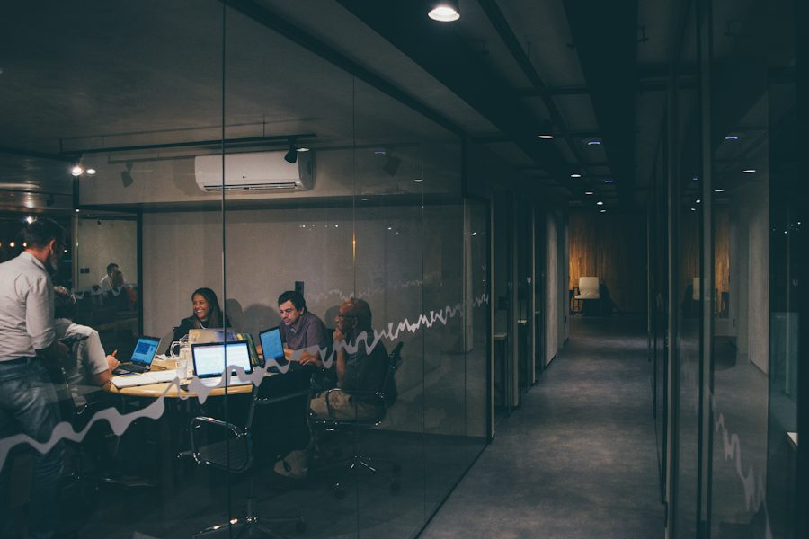
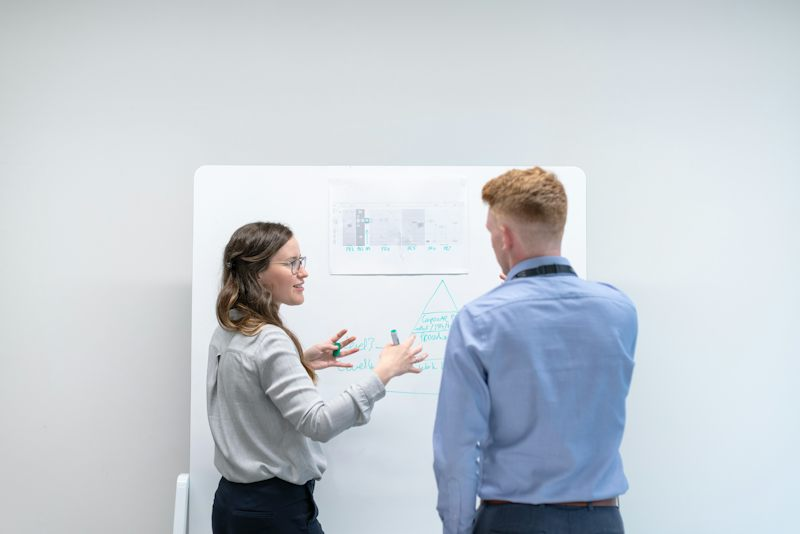

Teacher · Session card (Ficha de Sesión)
| Campo | Valor |
|---|---|
| Nivel / MCER | Intermedio 2 · GT English Path Nivel 08 · B1.2 · online (grupo / 1:1) · modo Interacción (pedir ayuda y aclarar una petición) · 60 min · SINGLE_TOPIC |
| Bloque / riesgo / temperatura | Bloque 3 PROBLEM · sesión 18 de 32 · riesgo Medio (Spicy) · contexto V (vida cotidiana) con casos de trabajo (≈50/50). Marco “el sistema / la oficina”, nunca “tu jefe”. Una sola pregunta Spicy (la del request que sigue pendiente). |
| Objetivo medible | Pedir ayuda en 4 movimientos (decir el problema · preguntar quién puede ayudar · hacer una petición cortés con razón o fecha · acordar el siguiente paso) en menos de un minuto y sin leer. |
| Disagreement hook | “Cuando una petición lleva tres días pendiente, ¿vuelves a preguntar o buscas a otra persona?” (la sesión enseña: pide con claridad, nombra a la persona o departamento correcto y da una fecha). |
| Punto de lengua (uno) | Pedir ayuda y aclarar una petición: Could you + verb, please? · Who can help us with…? · Who is in charge of…? Límites duros respetados: sin PP continuous, 2º/3er condicional, reported questions (NO “Could you tell me who…”), pasiva completa, relativas complejas, procesos técnicos extensos, debate/negociación, have got, because of / due to (es S19). |
| Léxico (12; 9 reciclados = 75 %) | RECICLADOS (9): status (S1, S7) · request (S13, S14, S17) · pending (S5–S17) · confirm (S5, S16, S17) · department (S13, S16, S17) · follow up (S11–S17) · missing (S12, S13, S17) · handle (S11, S13) · in charge of (S13). NUEVOS (3): the right person · clarify · forward. Chunks de lengua: Could you…, please? · Who can help us with…? · Who is in charge of…? |
| Dinámicas (4 familias) | VOC-02 Word Auction (SUBASTA; 2ª vez, tras S11; escalation_note: la subasta ya no es de palabras sino de situaciones — se apuesta 1–3 puntos a decir la frase antes de verla, y +1 si añades razón o fecha) · GRM-06 Interrogation (OCULTAMIENTO; 1ª vez; “Hidden Request”: un solo hablante conoce una tarjeta oculta y los demás la descubren preguntando) · B18-02 The Ranking Challenge (RANKING; 1ª vez; “Help Ladder”: ordenar a cuatro posibles ayudantes y defender el primer lugar, luego Take 2 con giro) · LIS-05 Predict and Score (APUESTA; 3ª vez en el curso, tras S2 y S8; sustituye a LIS-09 Gapped Chunks). |
| Sustituciones ADN 8-oct (gana sobre el mapa) | LIS-09 (dictado con huecos) se sustituye por LIS-05 adaptada a “escucha para actuar”: apuesta previa, escucha, orden de recados y pasar el recado. Cero reactivos con hueco. Práctica controlada = “Decide y dilo” (3 casos × 3 mensajes) + “Repáralo antes de enviarlo” (3 mensajes orales). Lectura = “Lee para decidir” con 1 pregunta de idea general. Cierre sin quiz: Quick repair + Final take 60 s sin apoyos + can-do. Frases de rescate visibles en Speaking, Mission, Take 2 y Pass it on. |
| Evidencia | Subasta: ≥4 de 7 lotes dichos con la frase · Hidden Request: ≥3 tarjetas descubiertas preguntando · Help Ladder: 2 defensas (Take 1 y Take 2 con giro) · Mission: 15 movimientos (éxito ≥12) · Take 2 sin apoyos 60–75 s con giro · Final take 60 s. |
| Minutos de habla del alumno (diseño) | ≈ 34 de 60 (warm-up 3, vocabulario 5, grammar 7, listening 2, speaking 9, misión 6, cierre 2). |
| Audio | 18 clips (7 vocab, 8 listening —Chen, inglés de China, no nativo, y Grace, inglés de Reino Unido—, 3 pronunciación). Estado: scripts listos, audio pendiente. Mientras tanto la página usa la voz del navegador con aviso visible. |
| Fotos | Sin fotos nuevas (el contenedor no tiene salida a images.unsplash.com y no hay navegador en esta corrida). Se reutilizan i2s03_hero (hero), i2s05_desk, i2s02_door (lecturas), i2s04_wall (llamada y ronda 1), i2s09_team (ronda 2), i2s05_ledger (ronda 3), i2s02_door (ronda 4), i2s03_board (misión), con otro encuadre; créditos no reverificados. Visual propio: tablero de llamadas, ticket de cola “Now serving”, sobres sellados, escalera de ayudantes y seguimiento OPEN → ASSIGNED → CLOSED en CSS. |
Warm-up · The Call Board
You have a problem. Who can help?
Tickets said 0 / 6Tap a problem. A ticket prints. Read the model. Then say ONE real sentence about a time you needed help like this. Tap “I said it”.
Quick questions
Teacher notes · §1 Warm-up
Pedagógica
- Entrada al tema sin gramática: el alumno elige un problema cotidiano o de trabajo y dice quién puede ayudar. Los modelos solo traen dos chunks (“Who can help us with this?” y “The … department can help.”). No corrijas todavía; anota si evita “help” + persona.
- Recicla S11 (who) y S13 (department, in charge) sin anunciarlo.
Engagement
- Frase del coach: “Hoy no vamos a quejarnos del problema: vamos a aprender a pedir ayuda para que alguien SÍ actúe. Cada ticket que digas cuenta.”
- Grupo: cada persona toma un ticket distinto y el siguiente cuenta su historia. 1:1: tú tomas un ticket primero con una historia tuya de 2 frases.
Crecimiento
- Gancho comercial: pedir ayuda en inglés es la situación real que más evita el cliente (miedo a “molestar”). Esta sesión le da frases corteses listas; el alumno percibe valor inmediato.
- Evidencia hoy: ≥4 de 6 tickets con una oración propia.
Vocabulary · The Help Auction
What do you say when…?
Points 0Read the situation. Bid 1, 2 or 3 points on yourself. Say the sentence out loud. Then reveal the model. If your sentence has the same idea, you win your bid. If not, you lose it. Bonus +1 if you add a reason or a date.
Group: the others decide if your sentence is a match.
1:1: your coach decides. The coach is the “house”.
Your help directory
Words appear here when you win them.
Teacher notes · §2 Vocabulary
Pedagógica
- 12 ítems (9 reciclados, 3 nuevos: the right person, clarify, forward). La recuperación es oral: el alumno intenta la frase ANTES de ver el modelo. Acepta variantes con la misma idea (“Could you tell me the status?” cuenta como acierto).
- Escalation_note (2ª vez de la subasta): +1 si añade razón o fecha (“I need it by Friday”). Sin traducción al español en pantalla.
Engagement
- “Apuesta de verdad: si dudas, apuesta 1. Si lo traes, apuesta 3.” Normaliza fallar: perder 1 punto es barato; los puntos cuentan lengua producida, nunca velocidad.
- 1:1: no hay rival; tú eres “la casa” y decides si coincide. Dilo en voz alta con humor.
Crecimiento
- El directorio final es un “kit de ayuda” de 12 palabras que el alumno puede copiar a su celular. Evidencia: ≥4 de 7 lotes ganados con frase propia.
- Venta: kit “Help Desk English” para equipos de compras, almacén y atención.
Grammar · Ask So They Act
Which message gets an answer?
Problem + Could you…, please? + reason or date.
Teacher notes · explicación (≤ 5 min)
Pedagógica
- Dos minutos: compara A y B; deja que el alumno diga POR QUÉ B funciona (cortés, claro, fecha). Después, tres moldes: Could you + verbo base + please (nunca “Could you to…”), Who can help us with + sustantivo (nunca “Who can helps”), Who is in charge of + sustantivo.
- Límite del nivel: NO pases a “Could you tell me who can help us?” (pregunta indirecta = reported questions). Si el alumno lo produce, no lo corrijas; reformula con la pregunta directa.
Engagement
- “Piensa en una oficina real: los mensajes que dicen ‘please’ y dan fecha se contestan primero.” Pide al alumno un ejemplo de su trabajo antes de seguir.
Crecimiento
- Este es el molde más usado por el alumno fuera de clase (correo, chat, llamada). Registra qué verbo trae más natural para el “antes y ahora” del S24.
Pick the message that gets the result. Then say it.
Said 0 / 3Repair the message before you send it
Read the message. Say the corrected version out loud. Then tap “I fixed it out loud” to check.
The Hidden Request
Points 0Group: one person is the caller and holds the card. The others ask the questions.1:1: your coach is the caller. You ask the questions. The card is sealed. Ask each question out loud. The caller taps the answer. Then make the request to the right person.
What do you need? · When do you need it? · Who is in charge? · Could you give me more details, please?
Then say: “Could you send me …, please? I need it by … . Who can help us?”
Teacher notes · §3 Grammar
Pedagógica
- MECÁNICA (≤1/3 del bloque): “Decide y dilo” (2 min) + “Repáralo” (2 min) = 4 de 12 min (33 %), todo dicho en voz alta y sin huecos. Notice 2 min. GRM-06 Hidden Request (6 min) es comunicativo: el alumno interroga y construye la petición final.
- Errores a vigilar: “Could you to send”, “Who can helps”, “Can you check status” (artículo), “Please check” seco. Corrige 1–2 de alto valor y modela; la repetición va en la Take 2.
- Tarjetas ocultas: 6 sobres (factura, foto de caja, contraseña, formulario firmado, fecha de reparación, documento faltante). El caller toca el sello solo después de oír la pregunta completa en inglés.
Engagement
- “Es un juego de detective de oficina: tienes que sacar tres datos con preguntas educadas.” Premia cada pregunta bien hecha con un punto.
- 1:1: el coach es el caller; deja un dato sin responder hasta que el alumno diga “please”.
Crecimiento
- Evidencia hoy: 3 preguntas distintas con “Could you…” o “Who…” y una petición final completa. Venta: la mayoría de las dudas de clientes en operaciones se resuelven con estos tres moldes.
Reading · Read and Decide
What do both messages want from you?
Teacher notes · §4 Reading
Pedagógica
- Dos lecturas (tarjeta A = 38 palabras, trabajo; tarjeta B = 32 palabras, vida). Insumo para decidir y hablar: el alumno elige la respuesta que logra el resultado y la dice. Una sola pregunta de idea general, sin preguntas de detalle.
- Clave de las respuestas buenas: A → b; B → b. Pregunta de idea general → “An action and a clear answer”.
Engagement
- “Imagina que este mensaje llegó a tu celular a las 8 a. m. ¿Qué haces?” Si el alumno quiere ignorarlo, pídele que diga por qué (riesgo: se queda pendiente).
Crecimiento
- Evidencia: elige con razón y lo dice con “Could you…”. Material para el portafolio: respuestas reales que el alumno puede reutilizar.
Listening · The Call to the Office
Chen lives in apartment 12. She calls the building office. Grace answers. Before you listen, bet on what will happen.
What will happen?
Bet points 0Say each prediction out loud: “I think Grace will…”. Choose 1, 2 or 3 points. Lock your bets. Then play the call.
Put the message slips in order
Tap the slips in the order they happened. Then pass the message on out loud.
“Chen called the building office because … The right person is … He will come …”
What is the call mostly about?
Teacher · guion literal (150 palabras aprox.) · [PARA GRABAR]
Teacher notes · §5 Listening
Pedagógica
- LIS-09 (dictado con huecos) sustituido por LIS-05 Predict and Score adaptada (ADN 8-oct): apuestas previas (sin pregunta de detalle), escucha, orden de recados y pasar el recado. Una sola pregunta de idea general. Clave de apuestas: 1 ✓, 2 ✗, 3 ✓, 4 ✗.
- Acento: Chen (inglés de China, no nativo) + Grace (Reino Unido). Cumple la regla de ≥1 de cada 3 sesiones con acento no nativo. Si el alumno pierde el hilo, reproduce solo la línea del número 4 (right person).
Engagement
- Pausa 0.5 s entre líneas. Pregunta antes de reproducir: “¿Quién crees que va a ayudar primero?” Deja que el alumno defienda su apuesta en inglés.
Crecimiento
- Evidencia: pasa el recado con 3 hechos sin leer. Mejora a mostrar en el S24: antes solo entendía “hot water”; ahora identifica persona, fecha y siguiente paso.
Speaking · The Help Ladder
Who should we ask first?
Defenses 0 / 8Group: everybody ranks alone, then you compare. The group must agree on number 1 in 90 seconds.1:1: you rank. Your coach ranks too. Compare and defend.
Talk about it
Asked 0 / 14
Teacher notes · §6 Speaking
Pedagógica
- B18-02 Ranking Challenge como “Help Ladder”: 4 rondas × 4 ayudantes. No hay orden correcto; lo que se evalúa es la razón dicha en inglés (“We should ask X first because X is in charge of…”). Take 2: aparece un giro (domingo, urgencia, fecha de pago, regalo) y el alumno reordena y defiende de nuevo. 8 defensas = 4 rondas × 2 tomas.
- 14 preguntas (9 con 2 follow-ups ★). Una pregunta Spicy (la 13): se formula sobre “el sistema”, no sobre una persona concreta.
Engagement
- “No hay respuesta correcta; gana el que logra que el grupo le crea.” 1:1: discute en serio una vez (“yo habría preguntado al vecino primero”) para que el alumno defienda con razones.
Crecimiento
- Evidencia: ≥6 de 8 defensas con “because” y un nombre de persona o departamento. Frases reciclables en S19+: “We should ask the department first because they are in charge of this.”
Mission · The Help Request

Ask for help so somebody can act.
For each case: 1 say the problem · 2 ask who can help · 3 make a polite request · 4 give a reason or a date · 5 agree the next step. Tap each move after you say it.
Same mission, new twist · 60–75 s
Pick a twist. Choose a problem from today. Do the four moves again. Do not read.
Teacher notes · §7 Mission
Pedagógica
- Tres casos con datos ficticios: Ana (orden de compra pendiente → Mr. Lee, accounting, T) · Pablo (formulario escolar → Ms. Ruiz, school office, V) · Sofía (paquete que no llega → delivery company, V). La “respuesta del invitado” se muestra solo después de que el alumno diga el movimiento 2 y sirve para practicar el movimiento 5.
- Take 2 con giro: el alumno elige una condición nueva (“I am not in charge of this”, “It is urgent”, “The office is closed”, “Nobody answers”) y repite sin apoyos 60–75 s.
Engagement
- “Cuando llegues a CLOSED, lo lograste: pediste ayuda y alguien puede actuar.” Si falla un movimiento, no pares: marca y repite solo ese en el Take 2.
Crecimiento
- Evidencia hoy: ≥12/15 movimientos + Take 2 completo. Producto observable para mostrar a RH o al jefe: “el alumno ya pide ayuda en inglés con petición cortés, persona correcta y fecha”.
Wrap-up · Ask Clearly
Fix the message out loud
One new situation. One minute.
Press the button.
Today I can… (tick, then say it)
Abilities 0 / 5You can ask for help, clearly and politely.
Homework: this week, make ONE real request to a real person (message or voice note). Say the problem, ask who can help, use “Could you …, please?” and give a date. Next: Session 19 · Delayed Again
Teacher notes · §8 Wrap-up
Pedagógica
- Sin quiz ni huecos (ADN). Quick repair (3 mensajes dichos en voz alta: “Could you to check”, “Who can helps”, “I need the status of the request”) · Final take 60 s sin apoyos (situación nueva) · can-do de 5 habilidades (guarda localStorage gt08-s18-can). Close_out declarado en voz alta (barra oscura).
- Léxico para reciclar en S19+: the right person · clarify · forward · status · request · pending · confirm · department · follow up · missing · handle · in charge of. Frases modelo: “Could you check the status, please?” · “Who can help us with this?” · “Who is in charge of hot water?” · “Could you confirm the date, please?” · “The request is still pending, so I will follow up today.”
Engagement
- “Hoy no corregimos todo: arreglamos mensajes para que alguien actúe.” Pide que mande su close_out a una persona real esta semana.
Crecimiento
- Puente a S19 (Delayed Again): ya sabes pedir ayuda; ahora explicas la causa de un retraso con “because of / due to”. Evidencia de la sesión: 15 movimientos de misión, Take 2 con giro y Final take. Venta: taller “Help Desk English” para equipos de compras, almacén y atención a clientes.